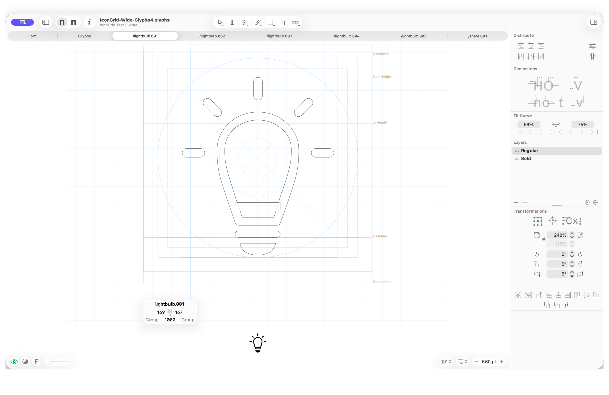
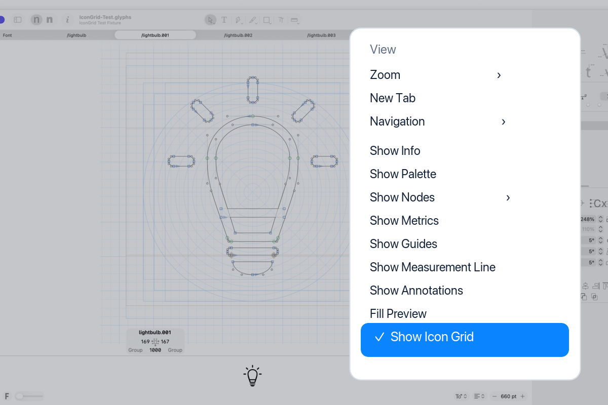
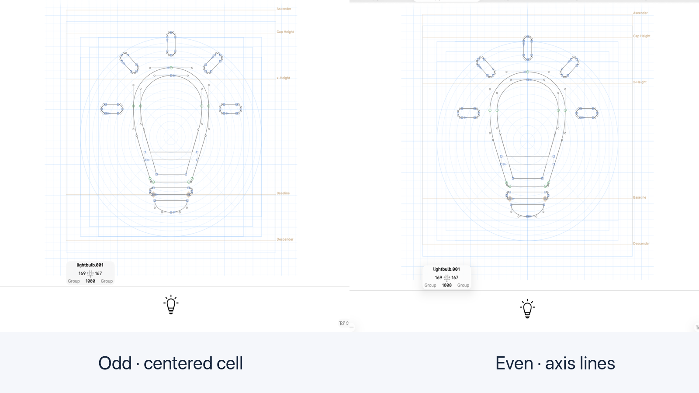
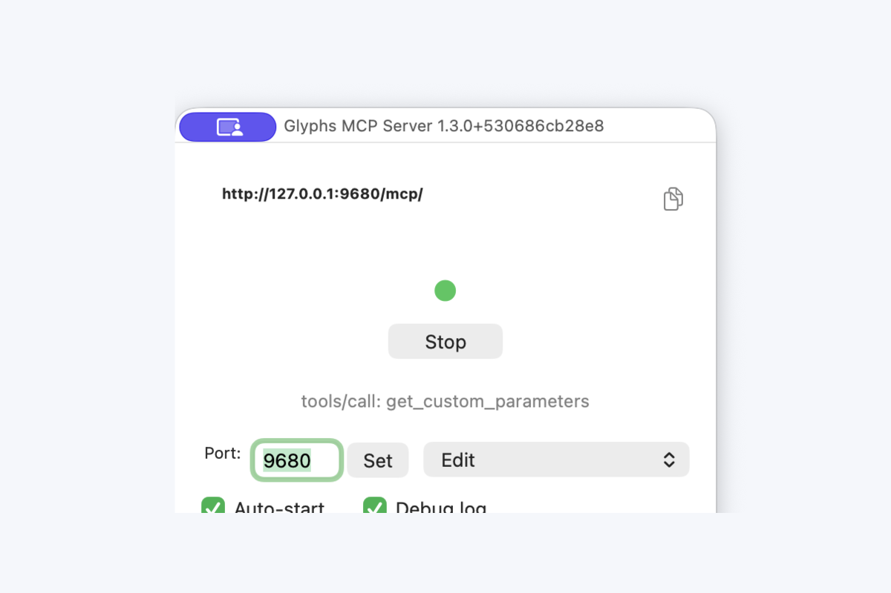

Geometry
gridSize, gridMode, width, height, columns, rows, origin, and baseline offset.
Reporter plug-in · Glyphs 3.5 and 4
Draw with square cells, concentric circles, spokes, and keylines. Set one construction unit per master and keep the rest simple.
Apache-2.0 · No outlines changed · No implicit save

Manual setup
Download the release, unzip it, and double-click IconGrid.glyphsReporter. Restart Glyphs, open a glyph in Edit view, then choose View → Show Icon Grid. To update, install the newer bundle and restart; to uninstall, remove Icon Grid from Glyphs’ plug-in folder and restart.


Recommended setup · 1000 UPM
IconGrid.gridSize controls both square-cell size and the distance between concentric circles. Put it on each master, not at font scope, when the construction unit changes with weight.

Grid phase
In odd mode, one complete cell is centered on the horizontal and vertical construction axes. Use even only when grid borders must coincide with both axes.

Options
Each setting resolves independently. A valid active-master value wins, then a valid font value, then the built-in default. Disabled or invalid values fall through safely.
gridSize, gridMode, width, height, columns, rows, origin, and baseline offset.
Padding, major-line cadence, rings, spokes, and common icon keylines.
Color and opacity, with a blue default that stays distinct from Glyphs guides.
A strict visual highlight near guides while drawing or moving nodes. It never snaps.
Glyphs MCP
Start Glyphs MCP with the Edit profile, connect to http://127.0.0.1:9680/mcp/, and install this repository’s Icon Grid skill. The skill identifies the font, previews changes, applies only confirmed values, reads them back, and leaves the font unsaved.

Use $glyphs-mcp-icon-grid on the open 1000-UPM icon font.
Leave font scope empty. Preview and set:
Regular IconGrid.gridSize = 34
Bold IconGrid.gridSize = 72Read both masters back. Do not save.
Install the skill in ~/.agents/skills, then add the MCP server to ~/.codex/config.toml.
python3 scripts/install_skill.py --client codex --scope user
[mcp_servers.glyphs-mcp]
url = "http://127.0.0.1:9680/mcp/"Claude Code loads personal skills from ~/.claude/skills.
python3 scripts/install_skill.py --client claude --scope user
claude mcp add --scope user --transport http glyphs-mcp \
http://127.0.0.1:9680/mcp/Gemini CLI can share the open ~/.agents/skills convention. Add httpUrl under mcpServers in ~/.gemini/settings.json.
python3 scripts/install_skill.py --client gemini --scope user
"glyphs-mcp": {
"httpUrl": "http://127.0.0.1:9680/mcp/"
}Cursor can load the shared skill location. Put the Streamable HTTP server in ~/.cursor/mcp.json.
python3 scripts/install_skill.py --client cursor --scope user
"glyphs-mcp": {
"url": "http://127.0.0.1:9680/mcp/"
}The MCP endpoint is local to your Mac. A browser-only AI session normally cannot reach 127.0.0.1.